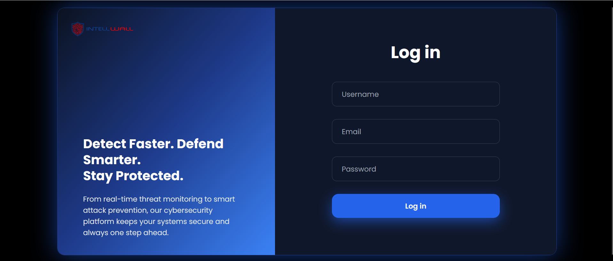
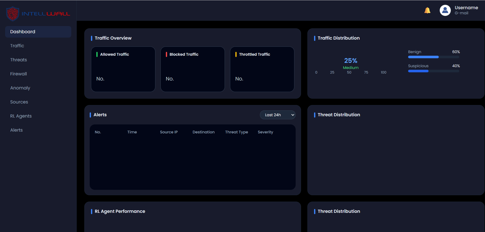
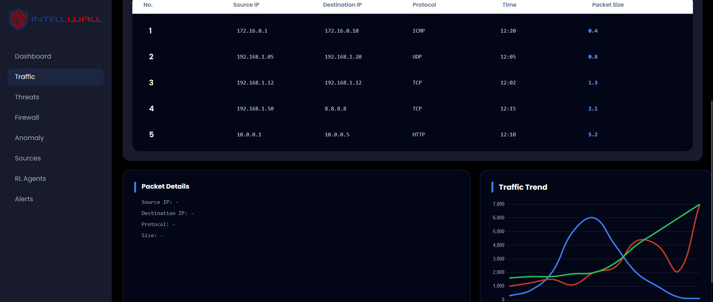

AI-Enhanced Cyber shield Dashboard
A comprehensive cybersecurity dashboard enhanced with AI capabilities for threat detection and monitoring. The interface provides real-time alerts, risk metrics, and a clean layout built with HTML5, Tailwind CSS, and JavaScript.
HTML5
Tailwind CSS
Vue.js
Project Screenshots

Add your screenshot
Login page

Add your screenshot
Main dashboard view

Add your screenshot
Traffic page
Optional fourth screenshot